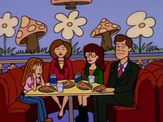

Episode Guide
Episode Guide
|  |
Esteemsters Episode #101 - March 3, 1997 Written by Glenn Eichler Song List Entries For This Episode Oops! List Entries For This Episode Transcript For This Episode |
|
Previous "Sealed With a Kick" (pilot) |
Next "The Invitation" (#102) |
|
Cast |
|---|
|
Regular:
Daria,
Quinn,
Helen,
Jake,
Jane,
Brittany,
Kevin,
Sandi,
Stacy,
Mr. DeMartino,
Ms. Li,
Mr. O'Neill
Guest: Mrs. Manson, Corey, Artie, SSW Reporter, Old Man on SSW Non-Speaking: Andrea, Coach Gibson |
|
Plot |
|
Summary:
On her first day at Lawndale High, Daria is diagnosed with low self-esteem and is forced to take a special class. There, she meets artist and fellow cynic Jane, and together, they scheme to get out of the class. |
|
Interesting Tidbits |
Continuity:
|
|
Memorable Quotes |
|
Ms. Li - As you can see, our Lawndale high students take great pride in their school. That's why you'll each be taking a small psychological exam to spot any little clouds on the horizon as you sail the student seas of Lawndale High. Daria - S.O.S., girl overboard. Quinn - Nobody told me about any test! Daria - (sarcastic) Don't worry. It's a psychological test. You're automatically exempt. Quinn - (doesn't get it) Oh. All right. Quinn - Let's see... they've been going out for awhile, and he's upset because other people keep asking her out, and she saying she can't help it if she's attractive and popular, and besides, nobody ever said they were going steady, and if he does want to go steady he's got to do a lot better than movie, burger, back seat, movie, burger, back seat, because there are plenty of guys with bigger back seats waiting to take her someplace nice! Mrs. Manson - Now, Dora, let's see if you can make up a story as vivid as your sister's. Daria - It's Daria. Mrs. Manson - I'm sorry... Daria. What do you see in the picture, Dara? Daria - Um... a herd of beautiful wild ponies running free across the plains. Mrs. Manson - Uh, there aren't any ponies. It's two people. Daria - Last time I took one of these tests they told me they were clouds. They said they could be whatever I wanted. Mrs. Manson - That's a different test, dear. In this test, they're people and you tell me what they're discussing. Daria - Oh... I see. All right, then. It's a guy and a girl and they're discussing... a herd of beautiful wild ponies running free across the plains. Mr. DeMartino - Daria, can you concisely and unemotionally sum up for us the doctrine of Mainfest Destiny? Daria - Mainfest Destiny was a slogan popular in the 1840s. It was used by people who claimed it was God's will for the U.S. to expand all the way to the Pacific Ocean. (pause) These people did not include many Mexicans. Helen - Daria, your father's trying to tell you not to judge people until you know them. You're in a brand-new school in a brand-new town. You don't want it to be Highland all over again. Daria - Not much chance of that happening... unless there's uranium in the drinking water here, too. Daria - Don't worry. I don't have low self-esteem. It's a mistake. Jake - I'll say! Daria - I have low esteem for everyone else. Daria - Mom? You feeling all right? It's not even 5:00 yet. Helen - I'm taking the rest of the day off to work with you on your self-esteem. Daria - Mom, I'm in the care of experts. Any meddling by an amateur could be dangerous. Boy - So... like what do you like to do after school? Quinn - Oh, nothing special. Go to the movies. Or, like, a theme park. Or, out for a really fancy meal now and then. Or maybe go to a concert if, like, I know somebody's got good seats and is renting a limo and stuff. Jane - You hear that? He hasn't got a prayer. Daria - Tell me about it. That's my sister. Jane - Oh. Bummer. Boy - So, you've got any brothers or sisters? Quinn - I'm an only child. Mr. O'Neill - What's a daydream that you'd like to see come true? Daria - Well, I guess I'd like my whole family to do something together. Mr. O'Neill - Excellent! Daria - Something that'll really make them suffer. Jake - How's the old self-esteem coming, kiddo? Daria - My self-esteem teacher says that being addressed all my life with childish epithets like "kiddo" is probably a key source of my problem. Jake - (distressed) Really? Daria - No. SSW Reporter - This is just astounding! Here you are, blind, deaf, and barely able to walk, yet you conducted simultaneous affairs with three members of the royal family! The question on all of America's mind is: how did you do it? Old Man - What? Jane - She doesn't get it. It's the royal family. You'd have to be blind. Daria - Good point. Daria - You know all the answers to the questions on the release test, right? Jane - I've got them in my notebook. Daria - Well, why don't we just take the test tomorrow and get out of the class once and for all? Jane - How would I spend my afternoons? Daria - U.F.O. conventions. Jane - Now you're talking. Ms. Li - Now, Mr. O'Neill has exciting news about our after-school self-esteem class. Daria - (dryly) This is really going to help me gradually ease into student life. Jane - Usually when I have this dream I'm wearing pink taffeta. Jane - I just want to say how proud I am today. Knowing that I have self-esteem gives me even more self-esteem. (glances at Daria, smirks, then launches into her act) On the other hand, having all of you know that I had low self-esteem makes me feel... kind of bad... like a big failure or something... (audience starts tittering) I... uh... I want to go home! (sobs and runs off stage) (audience laughs) Mr. O'Neill - Daria, wait! (runs after Jane) |
|
Mike Quinn's Delayed Reaction Review |
|
Advice Avoidance:
Quinn and Daria know their father well enough not to take (or even listen to) his advice in the car on the way to the first day of school. Of course, Jake means well but most of the stuff he was saying was painfully obvious or of no use to either of them. Actually, at first I thought Daria and Quinn just wanted to hear the song, I kind of liked it. |